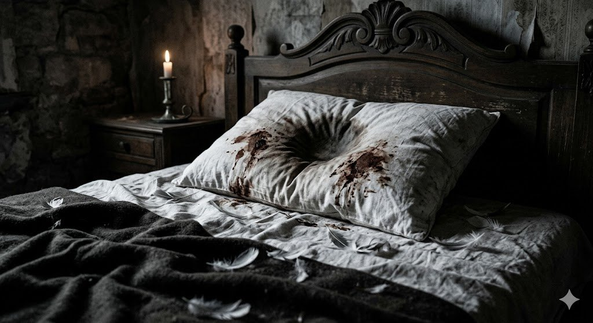

Antes de encerrarte · Lee con atención
El Manuscrito
Cada emoción, cada gesto y cada detalle será una llave. Lee como si tu salida dependiera de ello… porque dependerá.
Termina de leer para continuar

Escape Room de Comprensión LectoraCada emoción, cada gesto y cada detalle será una llave. Lee como si tu salida dependiera de ello… porque dependerá.
Para escapar debes atravesar cinco habitaciones. Cada una guarda una llave que solo se entrega a quien comprende de verdad lo que sintieron, pensaron y vivieron sus habitantes.